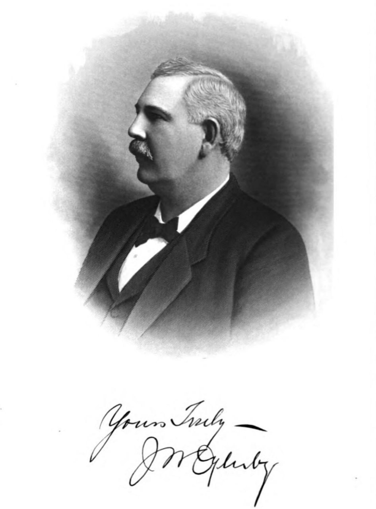

James Wood Oglesby Sr.
Back to the Railroad Organizers index
Online research dossier
Prepared August 19, 2026
Identity verdict
The South Georgia Railway figure was James Wood Oglesby Sr., usually printed as J. W. Oglesby. He was born at Marietta, Georgia, on May 11, 1857, and died at his home in Quitman on November 8, 1930.[1][17][18] His long presidency is verified by contemporary corporate reporting. The 1908 Men of Mark sketches describe him as the largest individual shareholder and say that he and his older brother Zenas Wise Oglesby held family majority control. Those ownership claims are strong probable, not verified from a stock ledger, and they do not make James the railroad's sole owner or sole builder.[1][4][7]
This identification is verified. Contemporary records distinguish him from:
- James Wood Oglesby Jr., his son, who entered railway management and was usually marked "Jr." in records involving both men;
- Zenas Wise Oglesby, his brother, business partner, railway superintendent, and director;
- J. J. or Joe J. Oglesby, another brother, who appears in a 1897 Barney injury report and a 1914 death notice.[1][3][5]

James Wood Oglesby Sr. Portrait and signature from Men of Mark in Georgia, volume 4, pp. 341-344, via Internet Archive.
Main findings
- A Georgia marriage index resolves his marriage to Martha Elizabeth “Bessie” Cobb as May 14, 1878, not 1877.[2]
- The railroad corporation elected James president in March 1896. Its board included nine men, including James, Zenas, J. J. Oglesby, and prominent Quitman investors.[4]
- The first Heartpine-Quitman line most likely opened in March 1897. Later biographies that call it complete in 1896 are one year early.[6][20][21]
- The often-repeated claim that the Greenville extension opened in 1898 is contradicted. Newspapers in March 1900 still described Quitman as the terminus and the Florida extension as planned work; specialist history dates the Greenville opening to October 1901, and the 1903 Georgia Railroad Commission report shows the route operating to Greenville.[8][9]
- James's banking position is proved by federal records: the First National Bank of Quitman, national charter 7994, had $100,000 capital and listed J. W. Oglesby as president in both 1906 and 1910.[10][11]
- Contemporary reporting confirms his major lumber, railway, resort, and public-service activity. Some biographical superlatives and unnumbered patent claims remain unverified.[1][12][13]
- The Georgia Death Index and a November 9 Associated Press obituary resolve his death as November 8, 1930. Huxford and Find a Grave are wrong in giving November 18.[17][18][19]
- His burial in Oak Hill Cemetery, Quitman, is verified by contemporary funeral coverage and a photographed marker. The marker gives only the years 1857-1930.[18][19]
Origins and early work
The best detailed early-life source is the 1908 fourth volume of Men of Mark in Georgia. It identifies James as a son of cotton-gin manufacturer Thomas I. Oglesby, says the family traced its ancestry to Scotland, and gives James's Marietta birth date as May 11, 1857. The adjacent biography of Zenas names their mother as Elizabeth Johnson Wood. James was still a child when his father died, and the biography says he had common-school education before entering work.[1]
The source is contemporary, specific, and useful, but it is also promotional biography. Birth and parentage are therefore strong probable, not equivalent to an inspected birth, Bible, probate, or church record. Huxford's 1948 Brooks County history repeats much of the account and calls James the youngest of six sons, but Huxford is demonstrably wrong on both the marriage year and death date. Its uncorroborated family details must be used cautiously.[3]
Men of Mark says James and Zenas worked in cotton-gin manufacturing before concentrating on lumber. It credits James with two cotton-machinery inventions and says the brothers obtained patents. No safely attributable patent numbers were located in this search. The cotton-gin work is strong secondary evidence; the patent claim remains unverified.[1]
The move south followed timber. The brothers established a sawmill at Heartpine, near Adel, then expanded their operations into Brooks County and North Florida. The exact chronology in later biography is not fully reliable, but the resulting business network is well documented by 1890s newspapers and by James's 1908 company-office list.[1][7]
Marriage and household
James married Martha Elizabeth Cobb, commonly called Bessie. The Georgia marriage index identifies J. W. Oglesby and M. E. Cobb in Bartow County, record 728186, with source image identifier 40660_303194-00401. An exact-date search returns the record for May 14, 1878, and the index agrees exactly with Men of Mark. Huxford gives May 14, 1877 and is contradicted.[1][2][3]
The couple had four sons:
- James Wood Oglesby Jr., later a railway general manager and first vice president;
- Robert Pope Oglesby;
- Wilbur Oglesby, railway superintendent before military service and his 1918 death in France;
- Hugh Oglesby.[1][3][14][18]
Huxford identifies nephew Henry Lumpkin as a foster son. That detail was not independently established from an original household or guardianship record.[3]
Original census images for 1860, 1870, 1880, 1900, 1910, 1920, and 1930 were not inspected. This dossier therefore does not claim a verified census household chain, residence-by-residence chronology, or census-based wealth figures.
No located evidence proves that James personally enslaved anyone. He was eight years old when slavery legally ended. No original slave schedule, parental probate inventory, deed, or tax record was inspected that would prove or disprove enslavement by his parents. The answer for the parental household is unknown; wealth and location are not evidence.
Lumber and related businesses
James's 1908 biography names him as:
- president of the Oglesby Lumber and Manufacturing Company at Quitman;
- president and a large shareholder of the Inter-State Lumber Company at Perry, Florida;
- a director and large shareholder of the Perry Naval Stores Company;
- the largest shareholder of the West Coast Lumber Company;
- a director of Jacksonville naval-stores factor West-Flynn-Harris Company;
- a director and shareholder of the Atlantic and Gulf Cotton Mills at Quitman;
- an owner of farm land and Quitman real estate.[1]
The company offices are strong evidence because the account was published during his life and contemporary newspapers independently place him in lumber and railroad operations. Exact production capacities, stock percentages, acreage, and claims such as “one of the largest” remain biographical assertions unless supported by operating records.[1][7][13]
An 1898 mill-operators' meeting places J. W. Oglesby among Georgia lumbermen negotiating railroad loading rules. In March 1899 the Atlanta Constitution reported that an Oglesby mill at Barney was cutting railroad-car standards, that James had acquired timber east of Barney, and that a logging line was being built toward it. That ties his timber acquisition, mill production, and private tram construction directly to the South Georgia Railway corridor.[7]
An August 1899 newspaper said the brothers acquired roughly 200 acres along the railroad within Quitman and planned a railroad-car manufacturing plant expected to employ at least 500 people. The report proves a well-developed plan. No located source proves that the factory was completed, so it must not be listed as an operating Oglesby company.[7]
Building and controlling the railway
Organization and first operation
On March 23, 1896, South Georgia Railroad stockholders accepted the charter, adopted bylaws, and elected a nine-member board. The directors included F. J. Spain, J. W. Hopson, J. W. Oglesby, J. G. McCall, Z. W. Oglesby, R. C. McIntosh, A. J. Rountree, J. J. Oglesby, and J. W. Hitch. The board elected James president, Hopson vice president, John Tillman treasurer, and Zenas superintendent.[4]
That evidence rules out the one-man-founder story. James was the president and central public figure, but the corporation had multiple directors, local investors, and an operating role for Zenas from the beginning.
Later technical histories date incorporation to March 6, 1896 and opening of the 27.5- or 28-mile Heartpine-Quitman line to March 1897.[20][21] Contemporary 1897 reports identify J. W. Oglesby as president, Barney as a station, and Oglesby mills at Heartpine and Barney. They also say James and H. G. Turner traveled to Washington to seek federal mail service for the railroad.[5][6]
Ownership
Men of Mark calls James president and largest shareholder in the South Georgia and West Coast lines. The adjacent Zenas sketch says the brothers held equal interests in several ventures and together owned a majority of the railroad stock. The defensible conclusion is:
James was president and largest individual shareholder; James and Zenas together held Oglesby-family majority control.
Calling James the sole owner or saying the brothers were the only owners is unsupported.[1]
Florida expansion and corporate form
The Greenville timeline needs correction. In March 1900 James publicly discussed a future extension from Quitman toward Greenville and Tampa. Reports still described the operating railroad as the 28 miles between Heartpine and Quitman. The line therefore was not already at Greenville in 1898, as Men of Mark and Huxford later claimed.[8]
RailGa dates the Greenville opening to October 1901. The Georgia Railroad Commission's 1903 report then lists a Heartpine-Greenville route, with Quitman at mile 29 and Greenville at mile 51, and gives 38.69 miles within Georgia.[9][20]
The later structure consisted of the Georgia company and Florida's West Coast Railway. South Georgia leased West Coast, and both used the operating style South Georgia & West Coast on equipment and in public usage. TapLines cautions that the combined style was not necessarily a separately incorporated company. The line reached Perry in 1904, and the northern endpoint moved from Heartpine to Adel. South Georgia absorbed West Coast in November 1923.[20][21]
Mileage varies by date and endpoint. Contemporary and later sources give totals from about 76 to 88 miles. Those figures should not be forced into one timeless number.[13][20][21]
Hampton Springs
The railway and related-company structure met at Hampton Springs. TapLines says South Georgia bought Inter-State Lumber Company's five-mile Perry-Hampton Springs logging railroad on March 1, 1915 for $26,343. Because James was president and a large shareholder of Inter-State, the transaction moved a related lumber line into the railway system. The branch ended service in February 1929 and was removed in 1931.[1][21]
The Florida Railroad Commission's official 1929 route table lists the line through Perry to Hampton Springs and gives 44.41 Florida miles from the state line to the resort terminus.[23]
Banking, resorts, and proposed ventures
Federal bank records verify a major office that family histories sometimes state without proof. The U.S. Comptroller of the Currency listed the First National Bank of Quitman, charter 7994, with $100,000 capital, J. W. Oglesby as president, and H. L. Young as cashier in 1906. The 1910 report still lists Oglesby and Young in those positions.[10][11]
James also bought and improved White Sulphur Springs near Gainesville, Georgia. A long 1907 newspaper feature describes hotel, cottages, baths, roads, landscaping, recreation, and water-system improvements under his ownership. Its tone is promotional, but ownership and the broad improvement campaign agree with later business reporting and his obituaries.[12][13][18]
At Hampton Springs, the Oglesby interests connected resort development to rail access. The evidence establishes common ownership, a hotel and resort operation, and a railway branch. It does not prove that resort profits financed railway construction.[1][21]
James and James Jr. also joined a 1907 charter petition for the proposed Quitman, Valdosta and Thomasville Electric Railway and Power Company. The petition proves participation in the proposal, not completion of a fifty-mile electric system.[7]
Management and succession
James remained president until death. Zenas served as superintendent and director until his death in January 1915. The board then appointed James's son Wilbur superintendent; a contemporary report said Wilbur had already been acting superintendent for more than a year.[7]
After Wilbur entered military service and died in France in 1918, James Jr. became general manager. A 1919 report lists James Sr. as president and James Jr. as general manager. The 1925 annual meeting again elected James Sr. president and James Jr. a director.[7][13]
In 1926 James announced a tentative arrangement under which the Seaboard Air Line might lease and later purchase the South Georgia, subject to Interstate Commerce Commission approval. The Quitman general offices denied that a sale had already occurred. No transfer followed. Describing Seaboard as having acquired the line in 1926 is false.[7]
Later specialist histories say Brooks-Scanlon acquired the South Georgia and Live Oak, Perry & Gulf operations in 1946, Southern Railway bought them in 1954, and the South Georgia merged into the Live Oak, Perry & South Georgia Railway in 1971. Those dates are useful succession context, but the original sale and merger instruments were not inspected in this project.[20][21][24]
War work and public activity
An October 1917 report says three of the Oglesbys' four sons were in military service, James served on the executive committee of the Georgia State Council of Defense, and Martha was active in Red Cross work. Wilbur was identified as railway superintendent and James Jr. with the Emory Hospital unit.[14]
In June 1918 James was elected vice chairman of an interstate association advocating a St. Marys-to-St. Marks canal.[15] A September 1918 report listed him among four Brooks County delegates to a Democratic state gathering. These records prove civic and party participation, but no located article shows him seeking elective office.[7]
James also used newspapers to argue public policy. In 1909 he contended that hostile regulation discouraged private railroad investment. In 1925 he urged reduced cotton acreage and criticized federal crop estimates, arguing that increased production harmed growers.[16] These are evidence of his economic views, not proof that his prescriptions were correct.[7]
Huxford says Governor Hugh M. Dorsey commissioned him lieutenant-colonel and aide-de-camp during World War I. No commission was located online, so the title remains secondary-source only.[3]
No contemporary source located in the documented search proves a particular church membership. Men of Mark says he leaned Methodist but was not a member in 1908. His 1930 funeral involved Baptist, Presbyterian, and Methodist ministers. That ecumenical service does not establish denomination.[1][19]
Wilbur memorial gift
James made a substantial gift to Brenau College in memory of Wilbur. Contemporary 1930 obituaries give $10,000. Huxford gives $20,000. The gift is verified, but the amount is unresolved until Brenau trustee, building, or accounting records are checked.[3][18]
Death and burial
James died at his Quitman home on Saturday night, November 8, 1930, after several weeks' illness. The Georgia Death Index identifies James W. Oglesby in Brooks County, record 387197, and exact-date testing isolates November 8. Newspapers dated November 9 carried the same Associated Press report from Quitman announcing the death, surviving widow, sons James Jr., Pope, and Hugh, and Monday burial at Oak Hill Cemetery.[17][18]
The Valdosta Daily Times funeral report of November 11 describes large regional attendance. Baptist minister C. W. Henderson conducted the service with Presbyterian minister J. D. Gillespie and Methodist minister W. F. Smith; burial followed in Oak Hill.[19]
The grave photograph reads "J. W. OGLESBY / 1857-1930" and names "MARTHA ELIZABETH COBB / WIFE OF / J. W. OGLESBY / 1860-1939". It does not show exact dates.[22]
The later November 18 date in Huxford and Find a Grave is contradicted by the state death index and contemporaneous report. November 8 should control.[3][17][18][22]
Claims audit
| Claim | Verdict |
|---|---|
| James Wood Oglesby was South Georgia Railway president. | Verified. Contemporary corporate reports from 1896 through 1925 and his 1930 obituary agree. |
| James alone founded, built, or owned the railway. | Overstated. He was president and largest individual shareholder; James and Zenas held family majority control; a multi-member board governed the company. |
| The line was completed in 1896. | Probably one year early. 1896 was the organization/construction year; March 1897 is the best opening date. |
| The Greenville extension opened in 1898. | Contradicted. It was still proposed in March 1900; October 1901 is the best opening date. |
| South Georgia & West Coast was always one incorporated company. | Misleading. The name described joint operation during South Georgia's lease of West Coast. |
| James owned Inter-State Lumber outright. | Not proved. He was president and a large shareholder. |
| The planned 1899 railroad-car plant employed 500 people. | Not proved. The source describes a proposal and forecast, not a completed factory. |
| James held cotton-machinery patents. | Unverified. Contemporary biography makes the claim but supplies no patent numbers. |
| Seaboard acquired the South Georgia in 1926. | False. The announced transaction was tentative and dependent on ICC approval; it was not completed. |
| James gave Brenau $10,000 or $20,000. | Gift verified; amount unresolved. Contemporary obituaries say $10,000, Huxford says $20,000. |
| James died November 18, 1930. | False. The state index and next-day report establish November 8. |
| James was Methodist. | Unresolved. In 1908 he leaned Methodist but was not a member; the funeral used ministers from three denominations. |
| James personally enslaved people. | No evidence located. He was a child before emancipation. Parental enslavement remains unknown because original slaveholding records were not inspected. |
What remains unresolved
- An original birth, family Bible, baptismal, or parental probate record for the May 11, 1857 birth and parentage;
- the original Bartow County marriage image behind index record 728186;
- original census images and a verified household chain from 1860 through 1930;
- original stock ledgers and exact ownership percentages for the railway and related companies;
- patent numbers, if any, for machinery attributed to James or Zenas;
- original charter, lease, merger, and sale instruments for the complete corporate sequence;
- Brenau records resolving whether the Wilbur memorial gift was $10,000 or $20,000;
- a documented church membership;
- original parental slave schedule, probate, deed, or tax evidence;
- a complete personal litigation history. No personal case was found in the documented newspaper search, but that is not proof none existed.
Research coverage
The project searched stored Barney/Oglesby research first, then online newspapers, Georgia Historic Newspapers, Internet Archive books, Georgia and Florida railroad-commission reports, U.S. Comptroller of the Currency reports, Ancestry indexes, FamilySearch access routes, Find a Grave and cemetery images, RailGa, TapLines, HawkinsRails, and bounded general-web queries. Names, initials, relatives, companies, railroad titles, towns, resorts, litigation terms, civic roles, and obituary variants were used.
The dossier is based on records available in the accessible online collections and does not claim an exhaustive search of undigitized archives. Original census and marriage images were not inspected.
Numbered sources
- William J. Northen, ed., Men of Mark in Georgia, vol. 4 (Atlanta: A. B. Caldwell, 1908), James Wood Oglesby, pp. 341-344, and Zenas Wise Oglesby, pp. 345-347, Internet Archive.
- "Georgia, U.S., Marriage Records From Select Counties, 1828-1978", Bartow County, J. W. Oglesby-M. E. Cobb, May 14, 1878, Ancestry collection 4766, record 728186, source image
40660_303194-00401. - Folks Huxford, The History of Brooks County, Georgia, 1858-1948 (1948), pp. 523-529.
- Savannah Morning News, March 24, 1896, p. 2, South Georgia Railroad organization, Newspapers.com image 852573116.
- Savannah Morning News, June 3, 1897, p. 2, J. J. Oglesby injury and J. W. presidency, Newspapers.com image 852579985.
- Valdosta Times, October 26, 1897, p. 3, railroad-mail trip and Oglesby mills, Newspapers.com clipping 193375036.
- March 1900 Florida-extension reports: Atlanta Constitution, March 5, p. 10, image 26828019; Savannah Morning News, March 6, p. 7, image 852601928; Atlanta Journal, March 8, p. 11, image 969468848.
- Railroad Commission of Georgia, Thirty-First Report (1903), printed pp. 88, 133, Internet Archive.
- U.S. Comptroller of the Currency, Annual Report (1906), First National Bank of Quitman, charter 7994, Internet Archive.
- U.S. Comptroller of the Currency, Annual Report (1910), Georgia national-bank officer table, Internet Archive.
- Atlanta Constitution, June 9, 1907, p. 6, White Sulphur Springs feature, Newspapers.com image 26877789.
- Atlanta Journal, March 27, 1910, p. 12, Brooks County business profile, Newspapers.com image 970009549.
- Americus Times-Recorder, October 1, 1917, p. 1, Oglesby family war service, Newspapers.com image 809526868.
- Atlanta Journal, June 11, 1918, p. 3, interstate canal association, Newspapers.com image 970687537.
- Atlanta Constitution, November 4, 1925, p. 6, Oglesby's cotton-policy letter, Newspapers.com image 398137835.
- "Georgia, U.S., Death Index, 1919-1998", James W. Oglesby, Brooks County, November 8, 1930, Ancestry collection 5426, record 387197.
- Associated Press obituary carried in Macon Telegraph, November 9, 1930, p. 1, image 826451303; Atlanta Constitution, November 9, p. 14, image 398041452; and Atlanta Journal, November 9, p. 20, image 972067503.
- Valdosta Daily Times, November 11, 1930, p. 5, funeral report, Newspapers.com image 889449131.
- Steve Storey, “South Georgia Railway,” RailGa.
- Donald R. Hensley Jr., “The South Georgia Railway Co.,” TapLines.
- James Wood Oglesby grave-marker photograph and memorial page, Find a Grave memorial 16988018, Find a Grave. Only photographed wording is used as marker evidence.
- Florida Railroad Commission, Thirty-Fourth Annual Report (1930), 1929 official route table, Internet Archive.
- Ralph Hawkins, “South Georgia Railway,” HawkinsRails.